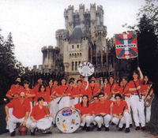

POR FIN ABRIMOS DE NUEVOOOOOOOOO!!!!!
Debido a unos fallos con la pagina en el servidor tuvimos que quitar la pagina, así que decidí hacerla nueva desde el principio.
Aparentemente no ha cambiado mucho, todos los cambios están en la estructura de la pagina, que se ha escrito aprovechando las ventajas del CSS, y en el nuevo libro de visitas, en el que he añadido todos los mensajes del antiguo.
De momento no funcionan todas las cosas, en unos días iré añadiendo cosas para que este todo operativo.
Un saludo a todos.
Hola a todos los visitantes y gracias por visitar nuestra página.
Como habréis podido ver somos la Fanfarre Sama Siku de Santutxu (Bilbao) y esta es nuestra página oficial.
Aqui encontraréis información sobre nuestra Fanfarre y el mundo de los instrumentos de viento y percusión, mantenimiento y limpieza de estos y técnicas de respiración, embocadura, etc.
){kind=link}
Nuestra Fanfarre es un grupo sin ánimo de lucro que destina todos sus ingresos a la Fanfarre para la compra de los instrumentos y todos sus accesorios, clases de profesores titulados para cada tipo de instrumento, ensayos y partituras, el mantenimiento de nuestra sede en Santutxu, etc.
En los apartados Introducción, Historia y Palmarés teneis toda la información sobre la fanfarre, como la historia de la fundación de la Fanfarre en 1.979, hace ya muchos años y nuestro Palmarés de premios que hemos ido reuniendo por distintos Festivales Internacionales de Bandas gracias al esfuerzo de todos los que han pasado por Sama Siku, desde sus fundadores en 1.979 hasta los mas jóvenes actualmente que nos van relevando.
 Nuestra Fanfarre se compone de jovenes músicos amaters, por eso con solo tener ganas de aprender un instrumento de viento o percusión y de pasartelo bién, ponte en contacto con nosotros, te proporcionaremos gratuitamente el instrumento y las clases para que aprendas y formes parte de esta gran Fanfarre, conozcas muchos nuevos amigos, viajes por españa y parte del extranjero, y vivas grandes experiencias.
){kind=link}
- Tfno: 944 336 473
- Movil: 609 467 268
- E-mail:
E-mail:
Tfno y Fax:
Tfno Movil:
fanfarre@samasiku.com
(+34) 944 336 473
(+34) 609 467 268
Dirección:
APTDO. CORREOS 4043
48004 - BILBAO (VIZCAYA)
ESPAÑA